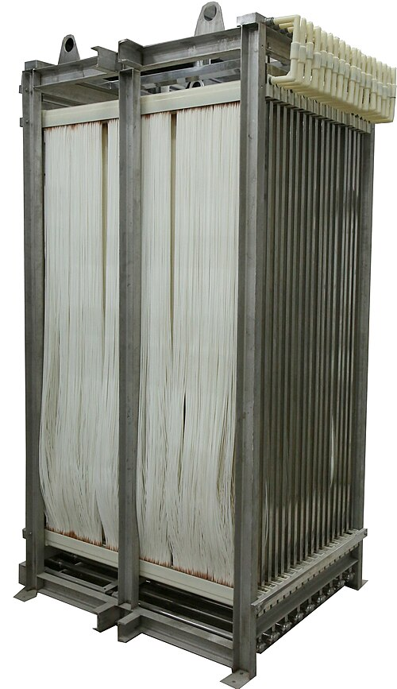

Membrane Transport and Separation
Every membrane separation reduces to three molecular parameters: permeability P, diffusivity D, and solubility S. This chapter develops the solution-diffusion model that links them, explains the Robeson upper bound that limits how good any polymer membrane can be, and shows how osmotic pressure governs reverse osmosis. These are the tools a polymer scientist needs to design or select a membrane material before casting a single film.
The Gas-Separation Membrane
A natural gas pipeline carries both methane and carbon dioxide. The CO₂ must be removed before the gas can be sold, and the separation must happen continuously, at high pressure, and without moving parts. The solution is a hollow-fiber polymer membrane module: a bundle of hair-thin polymer tubes, each with walls only 0.1 mm thick, through which CO₂ permeates far faster than CH₄. The membrane does not filter; it dissolves the gases and diffuses them through the solid polymer.

Figure 14.1: A bundle of hollow-fiber membranes. Each fibre is a polymer tube with a wall only 0.1 to 0.5 mm thick. Gas or liquid enters the shell side, dissolves into the polymer wall (sorption), diffuses through (governed by D), and emerges from the bore side (desorption). This is the solution-diffusion mechanism in physical form. — Photo: Imemflo, via Wikimedia Commons
The key design question is: which polymer gives the best combination of throughput (high permeability P) and purity (high selectivity α)? The answer leads to the Robeson upper bound, a boundary that no conventional polymer has ever crossed, and whose physical origin lies in the free-volume theory you already met in Chapter 12.
14.1 The Solution-Diffusion Model
Think of PVA support filament dissolving in water. The water molecules do not flow through channels in the PVA; they dissolve into the polymer surface, diffuse through the polymer matrix, and emerge on the other side. This dissolve-diffuse mechanism is the solution-diffusion model, and it governs transport through every dense (non-porous) polymer membrane.
In this model, the driving force is the chemical potential gradient across the membrane. For a pressure difference Δp across a membrane of thickness L, the steady-state molar flux is:
The PTFE liner inside a bowden tube is a dense polymer membrane. At print temperature, small molecules such as moisture or residual solvents slowly permeate through the PTFE following exactly Equation 14.1. Engineers building gas-tight print enclosures for hygroscopic filaments must account for this permeation when choosing liner materials.
Where Does Pressure Drive the Flux?
In a porous membrane, pressure drives viscous flow through the pores directly. In a solution-diffusion membrane, this does not happen: pressure is uniform throughout the polymer because the polymer is mechanically rigid. Instead, the applied pressure raises the chemical activity of the gas on the upstream face, increasing its equilibrium concentration in the polymer there. A concentration gradient then drives diffusion from front to back.
A gas at pressure $p$ has chemical potential $\mu = \mu^0 + RT\ln(p/p^0)$. On the high-pressure side (upstream), the gas dissolves into the polymer with equilibrium concentration $C_1 = S\,p_1$ (Henry's law, where $S$ is the solubility coefficient). On the downstream side, $C_2 = S\,p_2$.
The concentration difference across the membrane is:
$$\Delta C = C_1 - C_2 = S\,(p_1 - p_2) = S\,\Delta p$$Applying Fick's first law with this linear concentration profile:
$$J = D\,\frac{\Delta C}{L} = \frac{D\,S\,\Delta p}{L} = \frac{P\,\Delta p}{L}$$This derivation shows that permeability is the product $P = D \times S$: the diffusivity through the polymer times the solubility of the permeant in the polymer.
14.2 P = D × S: The Three Parameters
The derivation above reveals the fundamental factorisation of permeability:
This factorisation is powerful because D and S respond differently to molecular size, temperature, and polymer structure. A designer can target either factor independently.
Size Dependence of D and S
Diffusivity D decreases strongly with molecular size. A larger molecule requires a bigger transient gap in the polymer matrix to jump forward. From Chapter 12, free-volume theory gives $\ln D \propto -d_k^2$, where $d_k$ is the kinetic diameter of the molecule. Small molecules such as He and H₂ diffuse far faster than large ones such as CH₄ or propane.
Solubility S moves in the opposite direction: it increases with molecular condensability (boiling point). Larger, heavier molecules condense more readily into the polymer, so S increases with molecular weight. CO₂ is more soluble than N₂ in most polymers even though their kinetic diameters are similar, because CO₂ is far more condensable.
| Gas | dₖ (nm) | D in PDMS (m²/s) | S in PDMS (mol/m³/Pa) | Dominant factor |
|---|---|---|---|---|
| He | 0.26 | 1.0×10⁻⁹ | 4×10⁻⁸ | High D, low S |
| H₂ | 0.29 | 8.0×10⁻¹⁰ | 6×10⁻⁸ | High D, low S |
| O₂ | 0.35 | 2.0×10⁻¹⁰ | 9×10⁻⁷ | Balanced |
| N₂ | 0.36 | 1.5×10⁻¹⁰ | 4×10⁻⁷ | Lower S than O₂ |
| CO₂ | 0.33 | 1.5×10⁻¹⁰ | 5×10⁻⁶ | High S dominates |
Permeability and flux through a gas-separation membrane
A polyimide membrane for CO₂ separation has $D = 2.0\times10^{-11}$ m²/s and $S = 5.0\times10^{-6}$ mol/(m³·Pa). The membrane is $L = 0.20$ mm thick and operates with an upstream CO₂ partial pressure of $4.0\times10^5$ Pa (4 bar) while the downstream side is swept to near zero.
Find (a) the permeability P and (b) the steady-state molar flux J.
Solution
(a) Apply Equation 14.2:
$$P = D \times S = (2.0\times10^{-11})(5.0\times10^{-6}) = 1.0\times10^{-16}\;\mathrm{mol\,m/(m^2{\cdot}s{\cdot}Pa)}$$(b) Convert: $L = 0.20\;\mathrm{mm} = 2.0\times10^{-4}$ m. Apply Equation 14.1:
$$J = \frac{P\,\Delta p}{L} = \frac{(1.0\times10^{-16})(4.0\times10^{5})}{2.0\times10^{-4}} = \frac{4.0\times10^{-11}}{2.0\times10^{-4}} = 2.0\times10^{-7}\;\mathrm{mol/(m^2{\cdot}s)}$$Over a module with $100\;\mathrm{m^2}$ of membrane area, the total CO₂ flow rate is $2.0\times10^{-5}$ mol/s, or about 1.8 L/min at standard conditions.
14.3 Selectivity and the Robeson Upper Bound
A membrane separates species A from species B. If the downstream pressure of both is near zero, the ideal selectivity is simply the ratio of their permeabilities:
In 1991, Lloyd Robeson plotted α₀₂/N₂ vs. P₀₂ for every polymer in the literature and found that no data point lay above a clear empirical line, now called the Robeson upper bound. Higher permeability came at the cost of lower selectivity, and vice versa. He confirmed this pattern in 2008 with a larger dataset.
The physical origin: rubbery polymers (like PDMS) have high free volume and fast chain motion, giving large D for all gases. But a rubbery matrix does not discriminate strongly by molecular size, so D₀₂/D№₂ is modest and selectivity is low. Glassy polymers pack more tightly; D is lower overall, but the stiff chains create narrow, size-selective gaps, giving higher diffusivity selectivity. High selectivity thus comes with lower permeability.
PIMs and thermally rearranged (TR) polymers have rigid, contorted backbones that cannot pack efficiently. The resulting permanent microporosity gives them both high D (like a rubbery polymer) and high size-selectivity (like a glassy one), placing them above the 1991 upper bound. Active research targets these materials for natural gas sweetening and carbon capture.
14.4 Partition Coefficients
The solubility coefficient S is one form of a more general concept: the partition coefficient K. When a solute distributes between two phases at equilibrium, K is the ratio of concentrations:
Partition coefficients govern important polymer processes beyond gas separation. Solvent uptake in polymer films (swelling), drug loading in polymer drug-delivery matrices, and the absorption of plasticizers into PVC all depend on K between the polymer and the surrounding liquid or vapor phase.
14.5 Reverse Osmosis and Osmotic Pressure
Imagine two compartments separated by a membrane that passes water but not salt. Water flows spontaneously from the dilute side to the concentrated side to equalise chemical potential. This is osmosis. The pressure difference at which the flow stops is the osmotic pressure π. For dilute solutions, the van't Hoff equation gives:
In reverse osmosis (RO), the engineer applies a pressure greater than π to force water through the membrane from the concentrated side to the dilute side, desalinating seawater. The net driving pressure is:
When a photopolymer resin-printed part is washed in isopropyl alcohol, solvent molecules permeate into the partially cured network driven by chemical potential gradients. This creates osmotic swelling stress that can crack thin walls. The same thermodynamic driving force appears in the RO analysis: both are chemical-potential-driven transport across a polymer network.
Osmotic pressure and net driving force in seawater RO
Seawater contains NaCl at approximately $M = 600\;\mathrm{mol/m^3}$ (about 35 g/L) and $T = 300$ K. An RO module applies a transmembrane pressure of $\Delta p_{\rm applied} = 7.0$ MPa.
Find (a) the osmotic pressure and (b) the net driving pressure for water flux.
Solution
(a) NaCl dissociates into two ions, so $i = 2$. Apply Equation 14.5:
$$\pi = iMRT = (2)(600)(8.314)(300) = 2{,}993{,}000\;\mathrm{Pa} \approx 3.0\;\mathrm{MPa}$$This is why seawater desalination requires high-pressure pumps: the osmotic pressure alone is already 30 times atmospheric pressure.
(b) Apply Equation 14.6:
$$\Delta p_{\rm net} = 7.0 - 3.0 = 4.0\;\mathrm{MPa}$$Only 4.0 MPa of the 7.0 MPa applied pressure drives water through the membrane; the other 3.0 MPa merely overcomes the osmotic back-pressure.
Applying exactly π = 3.0 MPa would produce zero net flux. A practical RO system must apply significantly more than the osmotic pressure to achieve a useful water recovery. Typical seawater RO operates at 5.5 to 8.0 MPa.
Interactive: Membrane Flux Explorer
Adjust the four parameters below to see how permeability and flux change. The widget computes $P = D \times S$ and $J = P\,\Delta p/L$ in real time.
Concept Check
In the solution-diffusion model, what is the primary driving force for transport through a dense polymer membrane?
A membrane engineer doubles the membrane thickness L while keeping everything else constant. What happens to the flux J?
Concept Summary
The solution-diffusion model: gas dissolves into the polymer at the upstream face (governed by S), diffuses through the polymer (governed by D), and desorbs at the downstream face. Flux $J = P\,\Delta p/L$ where $P = D \times S$. The model is structurally identical to Fourier's law. Doubling L halves J; doubling Δp doubles J. The membrane thickness and applied pressure are the engineer's main operating handles.
A rubbery polymer has high O₂ permeability but low O₂/N₂ selectivity. According to the solution-diffusion model, which factor is most responsible for its low selectivity?
To start reverse osmosis of a solution with osmotic pressure 3.0 MPa, what is the minimum applied pressure needed?
Concept Summary
Selectivity $\alpha = P_A/P_B = (D_A/D_B)(S_A/S_B)$. Rubbery polymers have high P but low α because their flexible chains pass all gases without size discrimination (low diffusivity selectivity). Glassy polymers have lower P but higher α because stiff chains create narrower, size-selective gaps. The Robeson upper bound is the empirical limit of this tradeoff. For RO: flux only flows when $\Delta p_{\rm applied} > \Delta\pi$; the net driving force is $\Delta p_{\rm applied} - \Delta\pi$.
Problem Set: Chapter 14
Part A — Short Answer
Explain in physical terms why the permeability P of a dense polymer membrane is the product $P = D \times S$. What does each factor represent, and why must both be large for a practical gas-separation membrane?
A membrane engineer wants to maximise the O₂/N₂ selectivity of a new polymer. Should they focus on finding a polymer where D₀₂/Dℕ₂ is large, where S₀₂/Sℕ₂ is large, or both? Explain which factor is typically easier to manipulate and why.
Explain the physical origin of the Robeson upper bound. Why do rubbery polymers fall on the high-permeability, low-selectivity end of the plot, while glassy polymers fall on the low-permeability, high-selectivity end?
A drug-delivery polymer has a partition coefficient $K = 50$ for ibuprofen between the polymer and water. A pharmacist argues that a higher K always means faster drug release. Do you agree? Explain why K alone is not sufficient to determine the release rate, and what other parameter must be known.
A seawater desalination plant operates at fixed applied pressure. The feed concentration increases over the operating season due to drought. Predict and explain (a) what happens to the water flux, (b) what happens to the salt rejection, and (c) what operational change the plant can make to restore original flux without changing the membrane.
Part B — Calculations
A polymer membrane has $D = 2.0\times10^{-11}$ m²/s and $S = 5.0\times10^{-6}$ mol/(m³·Pa). Calculate the permeability P. Express your answer in units of $10^{-16}$ mol/(m·s·Pa).
Use $P = D \times S$. Multiply the two values directly.
$P = 2.0\times10^{-11} \times 5.0\times10^{-6} = 10.0\times10^{-17} = 1.0\times10^{-16}$ mol/(m·s·Pa).
In the requested units: $P = 1.0 \times 10^{-16}$, so the answer is $1.0$.
A membrane with $P = 2.0\times10^{-16}$ mol/(m·s·Pa) and thickness $L = 0.10$ mm operates under $\Delta p = 1.0\times10^5$ Pa (1 bar). Calculate the molar flux J. Express your answer in units of $10^{-7}$ mol/(m²·s).
$J = P\,\Delta p/L$. Convert: $L = 0.10\;\mathrm{mm} = 1.0\times10^{-4}$ m.
$J = \dfrac{2.0\times10^{-16} \times 1.0\times10^{5}}{1.0\times10^{-4}} = \dfrac{2.0\times10^{-11}}{1.0\times10^{-4}} = 2.0\times10^{-7}$ mol/(m²·s).
A silicone rubber membrane has $P_{\rm O_2} = 600$ Barrer and $P_{\rm N_2} = 200$ Barrer. Calculate the ideal O₂/N₂ selectivity $\alpha_{\rm O_2/N_2}$.
$\alpha_{A/B} = P_A/P_B$. The Barrer units cancel in the ratio.
$\alpha = 600/200 = 3.0$. This polymer passes O₂ three times faster than N₂.
A flavour molecule has a partition coefficient $K = 25$ between a food-grade silicone polymer packaging and an aqueous food product. If the food concentration is $C_{\rm ext} = 2.0$ mol/m³, what is the equilibrium concentration inside the silicone polymer?
$K = C_{\rm polymer}/C_{\rm ext}$. Rearrange: $C_{\rm polymer} = K \times C_{\rm ext}$.
$C_{\rm polymer} = 25 \times 2.0 = 50$ mol/m³. The flavour molecule concentrates 25-fold inside the silicone relative to the food.
A glucose solution ($i = 1$) has a molar concentration of $M = 100$ mol/m³ at $T = 300$ K. Calculate the osmotic pressure π in kPa. ($R = 8.314$ J/(mol·K))
$\pi = iMRT$ with $i=1$, $M=100$ mol/m³, $R=8.314$ J/(mol·K), $T=300$ K.
$\pi = 1 \times 100 \times 8.314 \times 300 = 249{,}420$ Pa $\approx 249$ kPa.
249 kPa is about 2.5 atm. To desalinate this solution by RO, you would need to apply more than 249 kPa of transmembrane pressure.
Chapter Summary
Transport through a dense polymer membrane is $J = P\,\Delta p/L$. The gas dissolves into the upstream face, diffuses through the polymer, and desorbs at the downstream face. There are no pores. The model is structurally identical to Fourier's law with P replacing k and Δp replacing ΔT.
Permeability factors into a diffusivity term D (how fast the molecule moves through the polymer; decreases with molecular size) and a solubility term S (how much dissolves in the polymer; increases with condensability). Both must be large for a high-performance membrane. Free-volume theory (Ch. 12) governs D.
Ideal selectivity $\alpha_{A/B} = P_A/P_B = (D_A/D_B)(S_A/S_B)$. The Robeson upper bound encodes the fundamental tradeoff: rubbery polymers have high P but low α; glassy polymers have lower P but higher α. No conventional polymer exceeds the bound. PIMs and TR polymers approach or exceed it.
$K = C_{\rm polymer}/C_{\rm external}$ describes equilibrium distribution between polymer and adjacent phase. For gases, K is proportional to S. K governs drug loading, solvent uptake, and flavour scalping by polymer packaging. The release rate also requires D; K alone is insufficient.
Osmotic pressure $\pi = iMRT$. For seawater (600 mol/m³ NaCl), $\pi \approx 3.0$ MPa. RO requires $\Delta p_{\rm applied} > \Delta\pi$; net flux uses $\Delta p_{\rm net} = \Delta p_{\rm applied} - \Delta\pi$. Flux decreases as feed concentration rises during operation.
Ch. 11 (Fick's law) → Ch. 12 (D in polymers, free volume) → Ch. 13 (convective kₘ outside the membrane) → Ch. 14 (transport through the membrane). Together these four chapters give a complete picture of mass transfer from the bulk fluid through the polymer and out the other side.
- Permeability: $P = D \times S$
- Flux (solution-diffusion): $J = P\,\Delta p/L$
- Ideal selectivity: $\alpha_{A/B} = P_A/P_B$
- Partition coefficient: $K = C_{\rm polymer}/C_{\rm external}$
- Osmotic pressure: $\pi = iMRT$
- Net RO driving force: $\Delta p_{\rm net} = \Delta p_{\rm applied} - \Delta\pi$
In the next chapter... Chapter 15 closes the loop by coupling heat transfer and mass transfer in simultaneous processes: drying of polymer films, reactive extrusion, and evaporative cooling. The Lewis number $\mathrm{Le} = \alpha/D$ governs the relative rates of thermal and mass diffusion.